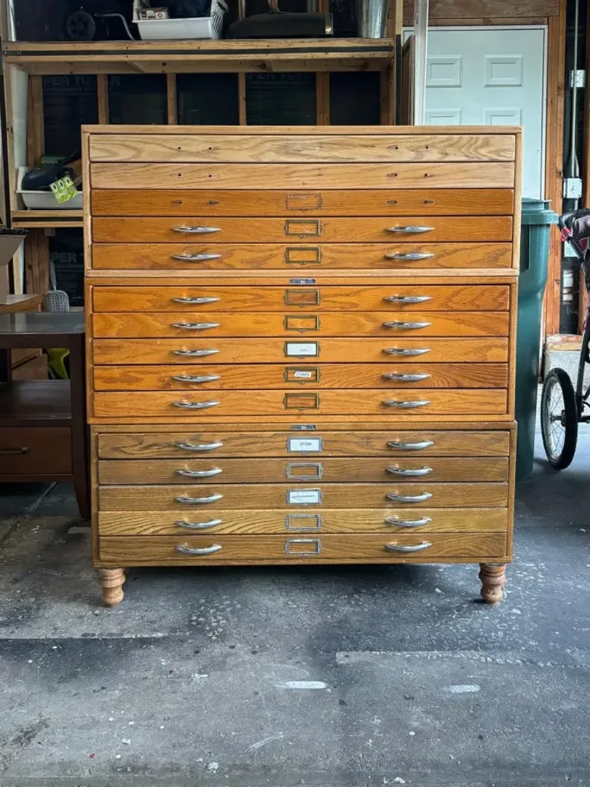
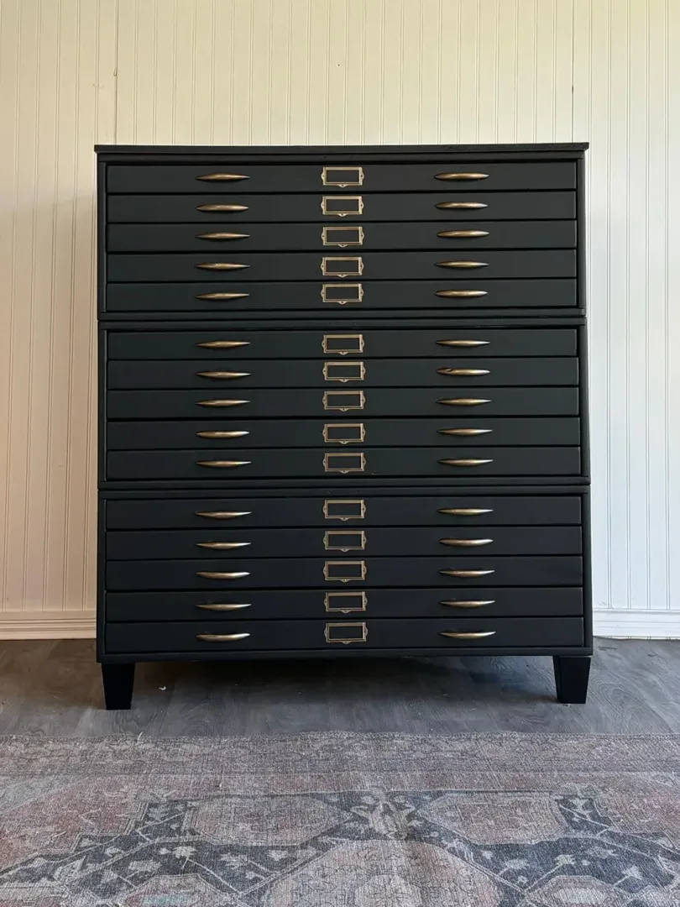

8+ years of onboarding, certification, product education, release readiness, and compliance programs for thousands of learners worldwide.
Before each Spotify Wrapped launch, I trained new advisors on the questions it would bring. This rebuild uses public details only.
Same playbook for any seasonal surge: new hires, a fixed date, and a spike in a few predictable questions. Train those first.
Most of my work is under NDA, so I've stripped out confidential details. You can click through the prototypes yourself.
Outside work, I restore vintage dressers, flat files, and cabinets with paint, stain, and a lot of sanding. It's the same thing I do at work: start with what's there, then change what it does.
See the furniture →

I design learning systems that help global teams understand, adopt, and confidently use complex products and AI.
8+ years at Spotify, Groupon, and in consulting. Based in Greater Chicago, remote first, and open to senior learning design, enablement, and AI enablement roles.
I start with the job. I figure out what people need to do differently, then build practice around it. At Spotify, advisors practiced on real privacy requests, and critical errors dropped 25%.
Privacy League case study →I iterate. I pilot early and watch the data. When one exam topic scored 70% and the rest scored 94 to 100%, I rewrote those questions and their module.
Recertification case study →I build with AI every day. Simulations, voiceover, automations, and whole content pipelines. I also lead an AI enablement pipeline at work, from intake to adoption.
Source to Ship case study →